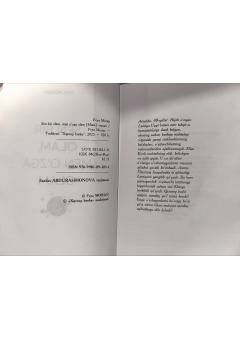

SBIkki insonning turli olamlarini bog'lovchi hissiy badiiy asar.
"Sen bir, men o'zga olam" — o'zbek tilidagi badiiy asar bo'lib, ikkita insonning ichki dunyosi va his-tuyg'ularini tasvirlaydi. Asar sevgi, yolg'izlik va insoniy munosabatlar mavzularini qamrab olishi mumkin. PDF matni to'liq o'qilmadi, shuning uchun tafsilotlar cheklangan.